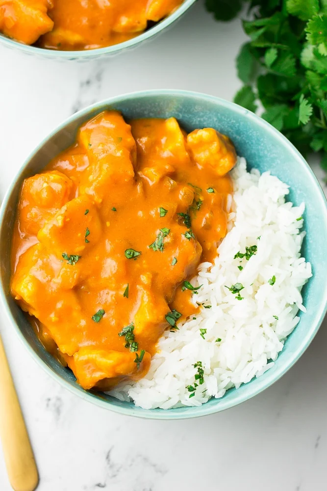

Tofu Tikki Masala Recipe

Description
Vegan Tikka Masala is so easy to make and best serve with vegan naan. Featuring "chicken-style" tofu and a perfectly spiced, creamy sauce, this popular dish just got the best vegan makeover! I love this method of cooking tofu; it has a unique texture and delicious flavor. When paired with a spicy, creamy masala sauce it is simply incredible.
Ingredients
- 2 (16-ounce) blocks extra-firm tofu
- 4 tablesppon olive oil
- 2 tablespoons cornstarch
- 1 1/2 teaspoon salt
- 1 large onion, diced
- 5 clove garlic, minced
- 1 tablespoon fresh grated ginger
- 1 1/2 teaspoon garam masala
- 1 teaspoon turmeric
- 1 1/2 teaspoon ground cumin
- 1 teaspoon coriander
- 1/4 teaspoon cayenne pepper
- 14 ounces tomato sauce
- 1 (13.5 ounce) can full fat coconut milk
- 4 1/4 cup water
- 4 cups of cooked brown rice
- chopped cilantro
Steps
- Press the tofu: Wrap the blocks of tofu in paper towels. Place a plate or pan on top of the wrapped tofu, and put a couple of heavy books on top of that. Let the tofu press for 20 minutes. (You can skip this step if you get the super firm variety)
- Preheat the oven to 400 degrees F and line a baking sheet with parchment paper.
- Slice the tofu into about 6 slices (see photos in post above for reference). Now, rip each slice into medium-large pieces. You can also simply cut them into cubes, if you prefer, but ripping gives the tofu a great "chicken-style" texture for this dish.
- Add the tofu pieces to a large ziplock bag, along with the olive oil, cornstarch and salt. Close the bag, and shake gently to coat. Arrange the tofu evenly on the prepared pan, and bake for 25-30 minutes, until golden and crispy.
- While the tofu bakes, prepare the sauce: Add 2 tablespoons of olive oil in a large pan over medium-high heat. Saute the onion for 3-4 minutes, then add the ginger and garlic and cook for 1 more minute. Add the spices, salt, tomato sauce and coconut milk. Stir until smooth and combined, then simmer for about 10 minutes, stirring frequently.
- If the sauce is too thick, add the 1/4 cup of water to thin. When the tofu is done baking, add it to the sauce and stir to coat the pieces.
- Serve hot with rice and chopped fresh cilantro, if desired.